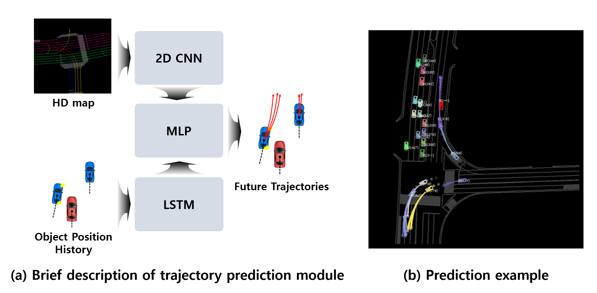
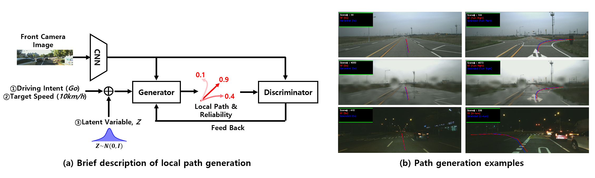
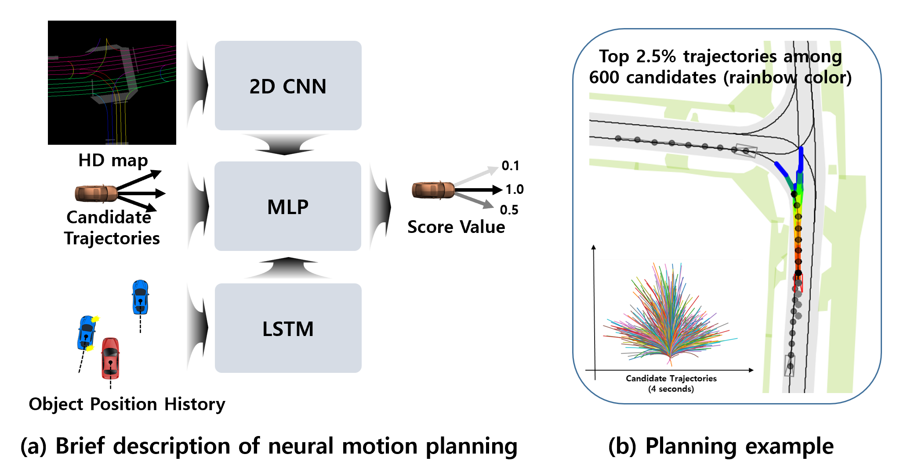
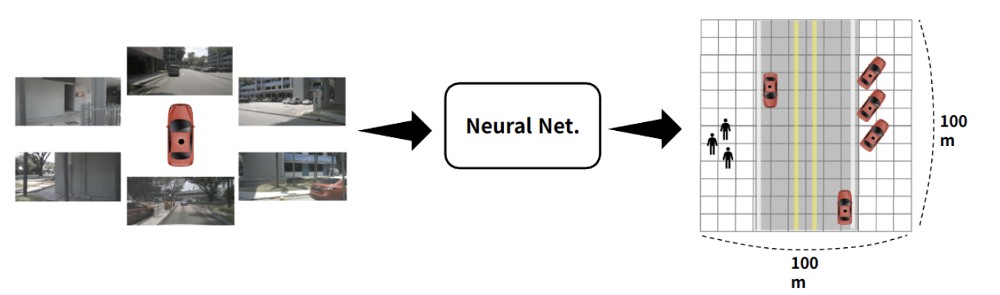

Founded in 2023 at ETRI, ADIR studies motion forecasting and planning, 3D object detection and tracking, and bird's-eye-view semantic segmentation for autonomous driving.
ADIR focuses on robust machine intelligence for real-world autonomous driving systems. Our recent work spans trajectory prediction, local path generation, neural planning, and spatially consistent BEV scene understanding.
Notice: We do not have plans to recruit students this year.
We design data-driven planning and perception methods that generalize across diverse driving conditions.

Multi-modal trajectory forecasting methods that model interaction context and scene constraints.
Related Publications
Local planning models that improve safety and smoothness while preserving real-time feasibility.
Related Publications
Neural planners for closed-loop driving decisions under dynamic traffic interactions.
Related Publications
BEV segmentation from multi-camera imagery with geometry-aware regularization.
Related Publications
Email: d1024.choi@etri.re.kr
Email: hjb3880@etri.re.kr
Intern positions will be announced when openings become available.
Full list: View all publications